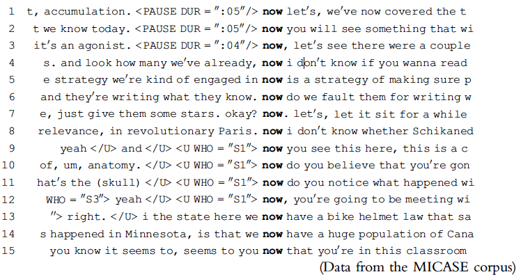

Corpus Linguistics: A General Introduction

language researchers do not have to rely on their own or other native speakers’ intuition or even on made-up examples.

What software is there to perform linguistic analyses on the basis of corpora? and what can these software do?
Programming (Python, R, etc)How can we know that the sample we are using is representative of the language or language variety?
Are there any objective ways to balance a corpus or to measure its representativeness?

Word Sketch Engine)Analysis of this corpus enables us to investigate cultural trends quantitatively. We survey the vast terrain of 'culturomics,' focusing on linguistic and cultural phenomena that were reflected in the English language between 1800 and 2000. We show how this approach can provide insights about fields as diverse as lexicography, the evolution of grammar, collective memory, the adoption of technology, the pursuit of fame, censorship, and historical epidemiology.(Science, 331(6014): 176–82, 2011).


wish list (?)Do we really need (more than) 500 billion words for linguistics?
Are there any hard rules regarding how large a corpus ought to be?
For the study of prosody (i.e. the rhythm, stress and intonation of speech), a corpus of 100,000 words will usually be big enough to make generalizations; for the analysis of verb-form morphology (i.e. the use of endings such as -ed, -ing and -s to express verb tenses) would require half a million words. (Kennedy (1998: 68)), while Biber (1993) suggests that a million words would be enough for grammatical studies.
Depending on you research topic!